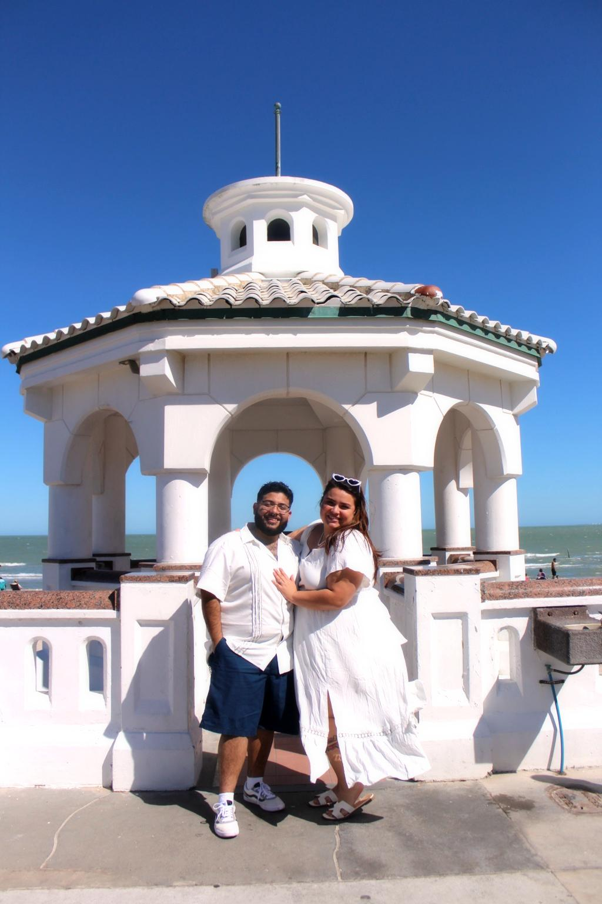
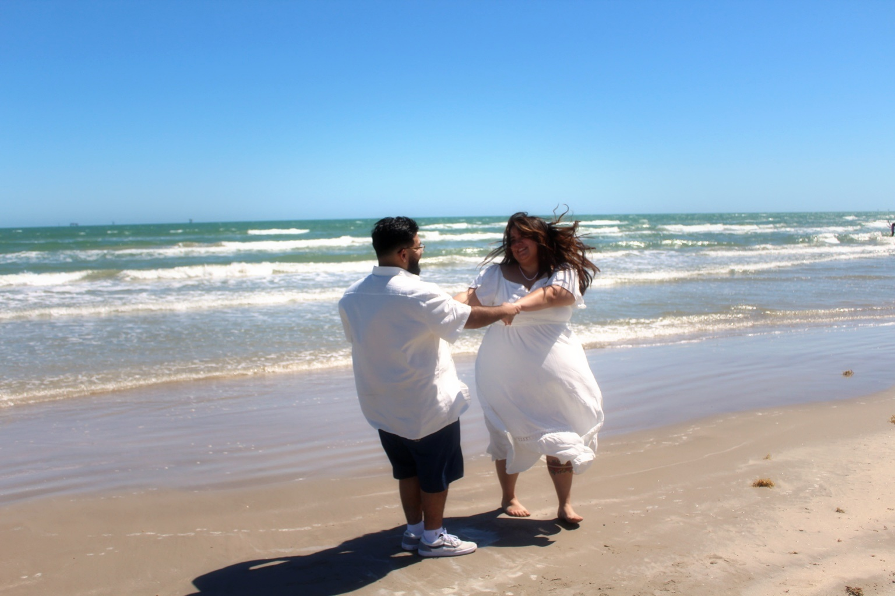
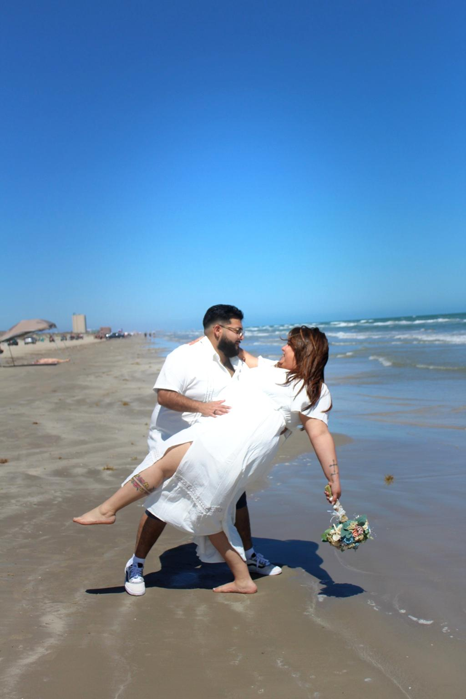
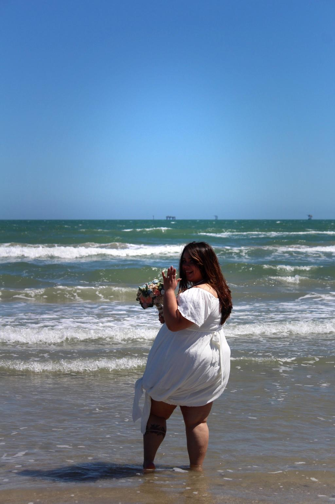
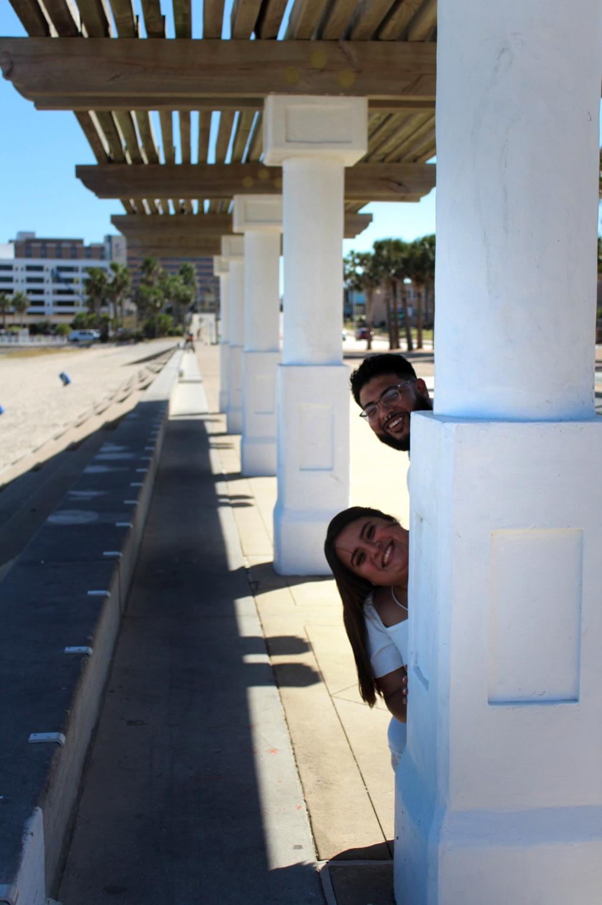
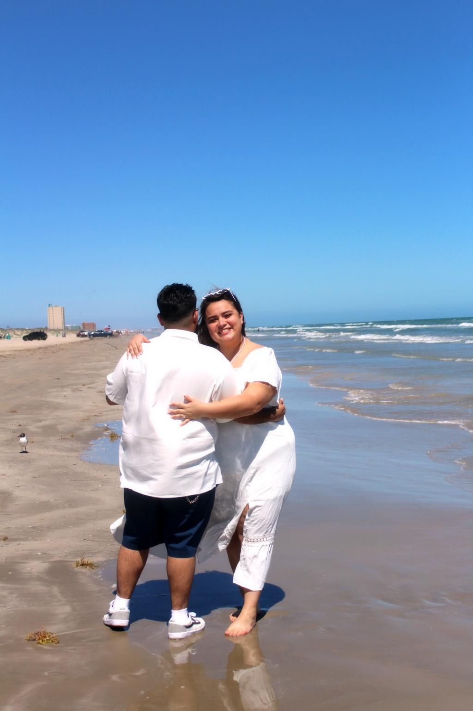
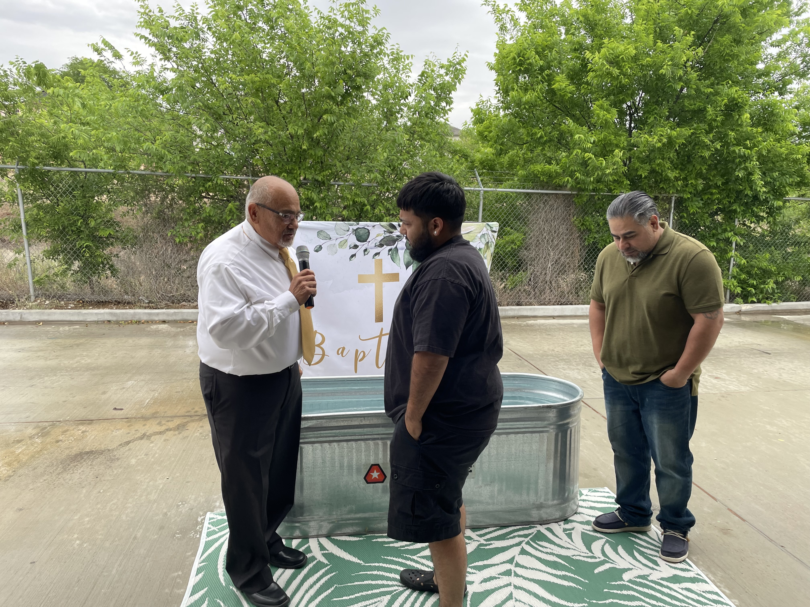
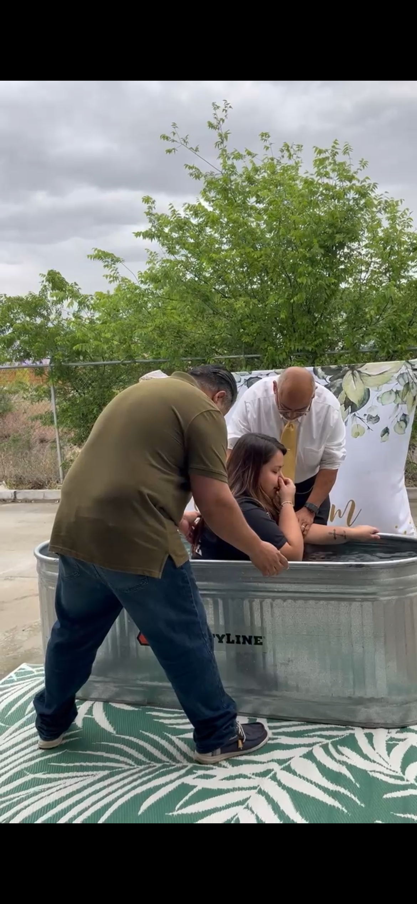
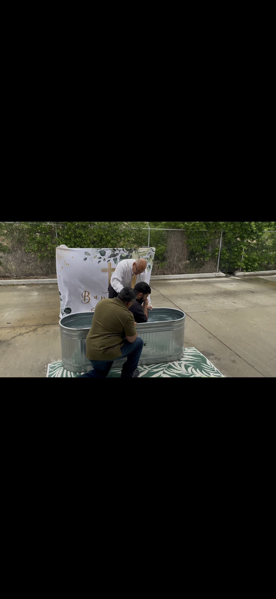

“And over all these virtues put on love,
which binds them all together in perfect unity.”
— Colossians 3:14
Our love story is written by Him
Are becoming one
June 27, 2026
Our Love

And Each
Other

Join us for food, fellowship, and celebration immediately following the ceremony.
We would love to see our guests dressed in variation colors of tan (for example colors of the sand) as we come together to celebrate this special day. Out of respect for our families, we gently ask that variation colors of blue will be set aside for the parents of the bride and groom — your kindness and understanding mean the world to us.
Grace Calvary Chapel
9107 Marbach Rd, Unit 225
San Antonio, TX 78245




Your presence is our greatest gift. Should you feel led to bless our union further, we graciously welcome a monetary contribution in lieu of traditional gifts — your generosity, in whatever measure you are led to give, will be deeply cherished as we begin this new chapter together.
Before they became one in marriage, they became one with Christ — united through the waters of Holy Baptism.



Please Sign Our
We invite you to stop by the table upon arrival and sign before taking your seat.
Find a verse that speaks to your heart,
highlight it, and sign your name in the margin
— a living gift of scripture for the journey ahead.
Please respond by May 27, 2026
As seating is limited, we kindly ask that you respond at your earliest convenience so we may joyfully reserve your place with us.
Kindly respond by phone
(210) 665-6986